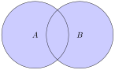
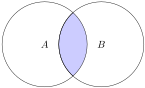
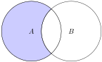
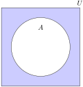

Section 5.2 Set Theory
In this section we review the set theory definitions of element and subset from Section 2.1. Then we introduce several definitions for operations on sets. Once we have the definitions, we will use those to prove statements about general sets.
Subsection 5.2.1 Set Notation
Recall, we usually use capital letters for sets, such as \(S\) or \(A\text{.}\) If we want to talk about elements in a set \(S\text{,}\) we use the notation \(x\in S\text{.}\) We read this notation as “\(x\) is in \(S\)” or “\(x\) is an element of \(S\text{.}\)” If \(x\) is not in \(S\text{,}\) then we use the notation \(x\notin S\text{.}\)
In general, if we use \(P(x)\) to describe a property of \(x\text{,}\) we use the notation
\begin{equation*}
\{x\in S : P(x)\}
\end{equation*}
and read the statement as “\(x\) in \(S\) such that \(x\) has property \(P\text{.}\)”
- \(\{n\in \mathbb{Z} : n=2k, k\in \mathbb{Z}\}\) is the set of even integers.
- \(\{(x, y): x+y=0, x\in \mathbb{R}, y\in \mathbb{R}\}\) is the set of points in the plane whose coordinates sum to 0.
- \(\{x\in \mathbb{R} : 3\leq x\leq 7\}\) is the closed interval \([3, 7]\text{.}\)
A set \(A\) is a subset of a set \(B\) if all the elements of \(A\) are also in \(B\text{.}\)
Notation: \(A\subseteq B\text{.}\) If \(A\) is not a subset of \(B\text{,}\) then we use the notation \(A\nsubseteq B\text{.}\)
Definition 5.2.2.
\(A\) is a subset of \(B\text{,}\) \(A\subseteq B\text{,}\) if for all \(x\text{,}\) if \(x\in A\) then \(x\in B\text{.}\)
\(A\) is a not a subset of \(B\text{,}\) \(A\nsubseteq B\text{,}\) if there exists \(x\text{,}\) such that \(x\in A\) and \(x\notin B\text{.}\)
Definition 5.2.3.
\(A\) is a proper subset of \(B\) if \(A\subseteq B\) and \(A\neq B\text{.}\)
Note that the definition of subset is an if...then statement. If we want to prove \(A\subseteq B\text{,}\) we prove if \(x\in A\) then \(x\in B\text{.}\) Thus, we assume \(x\in A\) and show \(x\in B\text{.}\)
Activity 5.2.1. Multiples of 6 Are Multiples of 3.
Prove \(\{6k: k\in \mathbb{Z}\}\subseteq\{3k: k\in \mathbb{Z}\}\text{.}\) Make sure in your proof you identify what you need to assume and what you need to show.
Activity 5.2.2. Multiples of 3 Are Not Multiples of 6.
Find a counterexample to prove \(\{3k: k\in \mathbb{Z}\}\nsubseteq\{6k: k\in \mathbb{Z}\}\text{.}\)
We say two sets are equal, \(A=B\text{,}\) if \(A\subseteq B\) and \(B\subseteq A\text{.}\)
We will let \(U\) be the universal set, which is the set of all possible elements. The universal set depend on the context. For example, in calculus, the universal set is often the set of all real numbers, while in discrete math, many times it is the integers. In set theory examples, it may be convenient to define a small universal set, such as \(U=\{1, 2, 3, 4\}\text{.}\) It is useful to note that every set is a subset of the universal set.
We also have the empty set, \(\emptyset\text{,}\) which is the set that contains no elements. It is useful to note that the empty set is a subset of every set. We will prove the formally in Example 5.2.16.
Subsection 5.2.2 Operations on Sets
We now give the element definitions for common set operations, along with the Venn diagrams for each of the sets. A Venn diagram is a picture that represents sets.
Union: \(x\in A\cup B\) if and only if \(x\in A\) or \(x\in B\text{.}\)
In set notation, \(A\cup B=\{x\in U : x\in A \text{ or } x\in B\}\text{.}\)

Intersection: \(x\in A\cap B\) if and only if \(x\in A\) and \(x\in B\text{.}\)
In set notation, \(A\cap B=\{x\in U : x\in A \text{ and } x\in B\}\text{.}\)

Set difference: \(x\in A-B\) (or \(x\in A\setminus B\)) if and only if \(x\in A\) and \(x\notin B\text{.}\)
In set notation, \(A-B=\{x\in U : x\in A \text{ and } x\notin B\}\text{.}\)

Complement: \(x\in A^C\) if and only if \(x\notin A\text{.}\)
In set notation, \(A^C=\{x\in U : x\notin A\}\text{.}\)

Example 5.2.8. Operations on Sets.
Let \(A=\{x\in \mathbb{R} : 0\leq x\leq 4\}\) and \(B=\{x\in \mathbb{R} : -1< x < 1\}\text{.}\)
Note, these sets can also be defined with interval notation, \(A=[0, 4], B=(-1, 1)\text{.}\)
Activity 5.2.3. Practice with Set Operations.
Let \(A=\{1, 2, 3, 4, 5, 6\}\) and \(B=\{2, 4, 6, 8, 10, 12\}\) and the Universal set \(U=\{n\in\mathbb{Z}: 1\leq n\leq 12\}\text{.}\)
(a)
Find \(A\cup B\text{.}\)
(b)
Find \(A\cap B\text{.}\)
(c)
Find \(A- B\text{.}\)
(d)
Find \(B- A\text{.}\)
(e)
Find \(B^{C}\text{.}\)
We can take the union or intersection of many sets using notation similar to summation notation:
\begin{equation*}
\bigcup_{i=1}^{n}A_i=A_1\cup A_2\cup\cdots \cup A_n
\end{equation*}
\begin{equation*}
\bigcap_{i=1}^{n}A_i=A_1\cap A_2\cap\cdots \cap A_n.
\end{equation*}
We can also take the intersection or union of infinitely many sets:
\begin{equation*}
\bigcup_{i=1}^{\infty}A_i=A_1\cup A_2\cup\cdots \cup A_n\cdots
\end{equation*}
\begin{equation*}
\bigcap_{i=1}^{\infty}A_i=A_1\cap A_2\cap\cdots \cap A_n\cdots
\end{equation*}
Activity 5.2.4. Infinite Union and Intersection.
Let \(A_i=\{1, 2, 3, \ldots i\}\text{.}\)
(a)
Find \(A_1, A_2, A_5,\) and \(A_n\text{.}\)
(b)
Find \(\bigcup_{i=1}^{5}A_i\text{.}\)
(c)
Find \(\bigcap_{i=1}^{5}A_i\text{.}\)
(d)
Find \(\bigcup_{i=1}^{\infty}A_i\text{.}\)
(e)
Find \(\bigcap_{i=1}^{\infty}A_i\text{.}\)
Definition 5.2.9.
The power set of a set \(A\) is the set of all subsets of \(A\text{.}\) We denote it \(\mathcal{P}(A)\).
Example 5.2.10. Power Set.
Let \(A=\{1, 2\}\text{.}\) Find \(\mathcal{P}(A)\text{.}\)
We need to find all the subsets of \(\{1, 2\}\text{.}\) The subsets are the elements of \(\mathcal{P}(A)\text{.}\)
The subsets are \(\emptyset, \{1\}, \{2\}, \{1, 2\}\text{.}\) Thus, \(\mathcal{P}(A)=\{\emptyset, \{1\}, \{2\}, \{1, 2\}\}\text{.}\)
Activity 5.2.5.
Let \(A=\{2, 4, 6\}\text{.}\) Find \({\cal{P}}(A)\text{.}\)
Another important set in mathematics is the Cartesian product of two sets \(A\) and \(B\text{.}\) We define it as
\begin{equation*}
A\times B=\{(a, b) : a\in A, b\in B\}.
\end{equation*}
This is a set of ordered pairs, where the first coordinate comes from set \(A\) and the second coordinate comes from set \(B\text{.}\)
Example 5.2.11. Cartesian Product of Sets.
Let \(A=\{1, 2, 3\}\) and \(B=\{2, 4\}\text{.}\)
Find \(A\times B\text{.}\)
Answer.\(\{(1, 2), (1, 4), (2, 2), (2, 4), (3, 2), (3, 4)\}\)
Example 5.2.12. Cartesian Product of Real Numbers.
Let \(A=\mathbb{R}\) and \(B=\mathbb{R}\text{.}\)
Then \(\mathbb{R}\times \mathbb{R}\) is the set of all points in the plane. This set is often written as \(\mathbb{R}^2\text{.}\)
Subsection 5.2.3 Proofs of Set Properties
Now that we have defined operations on sets such as union and intersection, we can look at various properties of these operations. We saw that intersection involves an “and” statement, while union involves an “or”. As we work with these properties we will be able to see connections between properties of sets and the logical connectives we saw in Chapter 1.
We will refer to the following properties of sets as the subset relations.
- \(A\cap B\subseteq A\text{;}\) \(A\cap B\subseteq B\text{.}\)
- \(A\subseteq A\cup B\text{;}\) \(B\subseteq A\cup B\text{.}\)
-
Transitivity.If \(A\subseteq B\) and \(B\subseteq C\) then \(A\subseteq C\text{.}\)
One of our goals in this section is to learn how to prove properties such as these.
We can think of the statement \(X\subseteq Y\) as the conditional statement, if \(x\in X\) then \(x\in Y\text{.}\)
To Prove \(X\subseteq Y\).
- Assume \(x\in X\text{.}\)
- Show \(x\in Y\text{.}\)
We can translate set operations into logical statements, as well. These translations are how we will prove properites of sets using elements.
Translating Sets into Logical Form.
-
Union.\(x \in X\cup Y\) if and only if \(x\in X\) or \(x\in Y\)
-
Intersection.\(x \in X\cap Y\) if and only if \(x\in X\) and \(x\in Y\)
-
Set Difference.\(x \in X-Y\) if and only if \(x\in X\) and \(x\notin Y\)
-
Complement.\(x \in X^C\) if and only if \(x\notin X\)
-
Cartesian Product.\((x, y) \in X\times Y\) if and only if \(x\in X\) and \(y\in Y\)
Example 5.2.13. Proving a Subset Property.
Prove \(A\cap B\subseteq A\text{.}\)
Proof.
Let \(x\in A\cap B\text{.}\) Then \(x\in A\) and \(x\in B\text{.}\) Thus, \(x\in A\text{.}\)
Therefore, \(A\cap B\subseteq A\text{.}\)
Activity 5.2.6. Intersection Subset Property.
Prove \(A\cap B\subseteq B\text{.}\) Be sure to write what you want to assume and what you want to show.
Activity 5.2.7. Subset Union Property.
Prove \(B\subseteq A\cup B\text{.}\) Be sure to write what you want to assume and what you want to show.
To prove two sets are equal, we prove they are subsets of each other.
Proving Set Equality.
To prove \(X=Y\) show
- \(X\subseteq Y\text{,}\) ie, show if \(x \in X\) then \(x \in Y\text{,}\) and
- \(Y\subseteq X\text{,}\) ie, show if \(x \in Y\) then \(x \in X\text{.}\)
Example 5.2.14. Proving Two Sets are Equal.
Prove \(A\cup(B\cap C)=(A\cup B)\cap (A\cup C)\text{.}\)
Proof.
\((\subseteq)\text{:}\) Let \(x\in A\cup(B\cap C)\text{.}\) Then \(x\in A\) or \(x\in B\cap C\text{.}\)
Case 1: \(x\in A\text{.}\) Then \(x\in A\cup B\) by the second subset relation. Similarly, \(x\in A\cup C\text{.}\) Thus, \(x\in A\cup B\) and \(x\in A\cup C\text{.}\)
Therefore, \(x\in (A\cup B) \cap (A\cup C)\text{.}\)
Case 2: \(x\in B\cap C\text{.}\) Then \(x\in B\) and \(x\in C\text{.}\) Then \(x\in A\cup B\) and \(x\in A\cup C\) by the second subset relation. Thus, \(x\in A\cup B\) and \(x\in A\cup C\text{.}\)
Therefore, \(x\in (A\cup B) \cap (A\cup C)\text{.}\)
\((\supseteq)\text{:}\) Let \(x\in (A\cup B)\cap (A\cup C)\text{.}\) Then \(x\in A\cup B\) and \(x\in A\cup C\text{.}\)
Case 1: \(x\in A\text{.}\) Then \(x\in A\cup (B\cap C)\) by the second subset relation (since we can form the union with ANY set).
Case 2: \(x\notin A\text{.}\) Since \(x\in A\cup B\) by assumption, \(x\in A\) or \(x\in B\text{.}\) Since \(x\notin A\text{,}\) \(x\in B\text{.}\)
Similarly, since \(x\in A\cup C\text{,}\) and \(x\notin A\text{,}\) \(x\in C\text{.}\) Thus, \(x\in B\cap C\text{.}\)
Therefore, \(x\in A\cup (B\cap C)\) (again by the second subset relation).
The next theorem shows that the empty set is a subset of every set.
Theorem 5.2.15.
For all sets \(A\text{,}\) \(\emptyset\subseteq A\text{.}\)
Proof.
By contradiction, assume there exists a set \(A\) such that \(\emptyset\nsubseteq A\text{.}\)
This means there exists \(x\in \emptyset\) such that \(x\notin A\text{.}\) But we cannot have \(x\in \emptyset\text{.}\) Hence we have a contradiction. Therefore, \(\emptyset\subseteq A\text{.}\)
There are many times in mathematics that we need to prove that a set is empty. We might need do do this if we need sets to be disjoint or if we need to prove that there are no elements with a particular property. The common method for proving a set is empty is to use contradiction. Note, usually if we want to prove \(A=B\text{,}\) we show both subsets, \(A\subseteq B\) and \(B\subseteq A\text{,}\) but we just showed \(\emptyset\subseteq A\text{,}\) always. Thus, we just need to show \(A\subseteq \emptyset\text{.}\) We do this by contradiction.
Proving a Set is Empty.
To prove \(A=\emptyset\)
- Assume \(x\in A\text{.}\)
- Reach a contradiction.
Example 5.2.16. Proving a Set is Empty.
Prove \(U^{C}=\emptyset\text{,}\) where \(U\) is the universal set.
Proof.
Let \(x\in U^{C}\text{.}\) Then \(x\notin U\text{.}\) But since \(U\) contains everything, \(x\in U\text{,}\) which is a contradiction. Therefore, \(U^{C}=\emptyset\text{.}\)
Activity 5.2.8. Practice Proving a Set is Empty.
Prove \(A\cap A^C=\emptyset\text{.}\) Be sure to write what you want to assume and what you want to show.
Definition 5.2.17.
Two sets \(A\) and \(B\) are disjoint if \(A\cap B=\emptyset\text{.}\)
Activity 5.2.9. A More Complicated Subset Proof.
Prove if \(A\subseteq B\) then \(A\cup C\subseteq B\cup C\text{.}\) Note, you need to show \(A\cup C\subseteq B\cup C\text{.}\) So how do you show a subset? What set should you assume \(x\) is in?
Summary of Set Identities.
Let \(U\) be the universal set, and \(A, B\text{,}\) and \(C\) be subsets of the universal set.
-
Commutative Laws.\(A\cup B=B\cup A; \ \ A\cap B=B\cap A\)
-
Associative Laws.\((A\cup B)\cup C=A\cup(B\cup C);\ \ (A\cap B)\cap C=A\cap(B\cap C)\)
-
Distributive Laws.\(A\cup(B\cap C)=(A\cup B)\cap (A\cup C);\) \(A\cap(B\cup C)=(A\cap B)\cup (A\cap C)\)
-
Identity Laws.\(A\cup \emptyset=A;\ \ A\cap U=A\)
-
Complement Laws.\(A\cup A^C=U;\ \ A\cap A^C=\emptyset\)
-
Double Complement Law.\((A^C)^C=A\)
-
Idempotent Laws.\(A\cup A=A;\ \ A\cap A=A\)
-
Universal Bound Laws.\(A\cup U=U;\ \ A\cap \emptyset=\emptyset\)
-
DeMorgan's Laws.\((A\cup B)^C=A^C\cap B^C;\ \ (A\cap B)^C=A^C\cup B^C\)
-
Absorption Laws.\(A\cup(A\cap B)=A;\ \ A\cap(A\cup B)=A\)
-
Complements.\(U^C=\emptyset;\ \ \emptyset^C=U\)
-
Set Difference Law.\(A-B=A\cap B^C\)
Exercises Exercises
1.
Let \(A=\{1, 3, 5, 7, 9\}\text{,}\) \(B=\{3, 6, 9\}\text{,}\) and \(C=\{2, 4, 6, 8\}\text{.}\) Find each of the following:
- \(A\cup B\text{.}\)
- \(A\cap B\text{.}\)
- \(A\cup C\text{.}\)
- \(A\cap C\text{.}\)
- \(A-B\text{.}\)
- \(B-A\text{.}\)
- \(B\cup C\text{.}\)
- \(B\cap C\text{.}\)
2.
Let the universal set be \(\mathbb{R}\text{,}\) and let \(A=\{x\in \mathbb{R}:0< x\leq 2\}\text{,}\) \(B=\{x\in \mathbb{R}:1\leq x< 4\}\text{,}\) and \(C=\{x\in \mathbb{R}:3\leq x< 9\}\text{.}\) Find each of the following:
- \(\displaystyle A\cup B\)
- \(\displaystyle A\cap B\)
- \(\displaystyle A^{C}\)
- \(\displaystyle A\cup C\)
- \(\displaystyle A\cap C\)
- \(\displaystyle B^{C}\)
- \(\displaystyle A^{C}\cap B^{C}\)
- \(\displaystyle A^{C}\cup B^{C}\)
- \(\displaystyle (A\cap B)^{C}\)
- \(\displaystyle (A\cup B)^{C}\)
3.
Determine whether each of the following are true or false.
- \(\displaystyle \mathbb{Z}^+\subseteq \mathbb{Q}\)
- \(\displaystyle \mathbb{R}^-\subseteq \mathbb{Q}\)
- \(\displaystyle \mathbb{Q}\subseteq \mathbb{Z}\)
- \(\displaystyle \mathbb{Z}^-\cup\mathbb{Z}^+= \mathbb{Z}\)
- \(\displaystyle \mathbb{Z}^-\cap\mathbb{Z}^+= \emptyset\)
- \(\displaystyle \mathbb{Q}\cap\mathbb{R}= \mathbb{Q}\)
- \(\displaystyle \mathbb{Q}\cup\mathbb{Z}= \mathbb{Q}\)
- \(\displaystyle \mathbb{Z}^+\cap\mathbb{R}= \mathbb{Z}^+\)
- \(\displaystyle \mathbb{Z}\cup\mathbb{Q}= \mathbb{Z}\)
4.
Let \(A=\{a, b, c\}\text{,}\) \(B=\{b, c, d\}\text{,}\) and \(C=\{b, c, e\}\text{.}\)
- Find \(A\cup(B\cap C)\text{,}\) \((A\cup B)\cap C\text{,}\) and \((A\cup B)\cap (A\cup C)\text{.}\) Which of these sets are equal?
- Find \(A\cap(B\cup C)\text{,}\) \((A\cap B)\cup C\text{,}\) and \((A\cap B)\cup (A\cap C)\text{.}\) Which of these sets are equal?
- Find \((A-B)-C\) and \(A-(B-C)\text{.}\) Are these sets equal?
5.
Determine if the following statements are true or false. Give a justification for you answer.
- The number 0 is in \(\emptyset\text{.}\)
- \(\displaystyle \emptyset= \{\emptyset\}\)
- \(\displaystyle \emptyset\in \{\emptyset\}\)
- \(\displaystyle \emptyset\in \emptyset\)
6.
Let \(A_i=\{x\in \mathbb{R}: -i\leq x\leq i\}\) (the interval \([-i, i]\)) for all nonnegative integers \(i\text{.}\)
- Find \(\bigcup_{i=0}^{4}A_i\text{.}\)
- Find \(\bigcap_{i=0}^{4}A_i\text{.}\)
- Find \(\bigcup_{i=0}^{n}A_i\text{.}\)
- Find \(\bigcap_{i=0}^{n}A_i\text{.}\)
- Find \(\bigcup_{i=1}^{\infty}A_i\text{.}\)
- Find \(\bigcap_{i=1}^{\infty}A_i\text{.}\)
7.
Let \(A=\{1, 2\}\) and \(B=\{2, 3\}\text{.}\) Find
- \({\cal{P}}(A\cap B)\text{.}\)
- \({\cal{P}}(A)\text{.}\)
- \({\cal{P}}(A\cup B)\text{.}\)
- \({\cal{P}}(A\times B)\text{.}\)
8.
Prove if \(A\subseteq B\) and \(B \subseteq C\) then \(A\subseteq C\text{.}\)
9.
Prove if \(A\subseteq C\) and \(B \subseteq C\) then \((A\cup B)\subseteq C\text{.}\)
10.
Prove if \(A\subseteq B\) and \(A \subseteq C\) then \(A\subseteq (B\cap C)\text{.}\)
11.
Prove \(((A\cup B)- B)\subseteq A\text{.}\) Give an example of two sets \(A\) and \(B\) such that \(((A\cup B)- B)\neq A\text{.}\)
12.
Let \(A\) and \(B\) be subsets of the universal set \(U\text{.}\) Prove \(A\cap B^c=\emptyset\) if and only if \(A\subseteq B\text{.}\)
13.
Prove if \(A\cap B=A\) then \(A\subseteq B\text{.}\) Is the converse true? If so prove it; if not give a counterexample.
14.
Prove if \(A\subseteq B\) then, for all sets \(C\text{,}\) \(C- B\subseteq C- A\text{.}\) Explain why in the case that \(C\) is the universal set \(U\text{,}\) this property can be stated more concisely as \(B^C\subseteq A^C\text{.}\)
15.
True or False? If the statement is true give a proof. If the statement is false give a counterexample.
- \(A\cup(B- C)=(A\cup B)- (A\cup C)\text{.}\)
- \(A\cap(B- C)=(A\cap B)- (A\cap C)\text{.}\)
- \((A- B)^c=A^c- B^c\text{.}\)